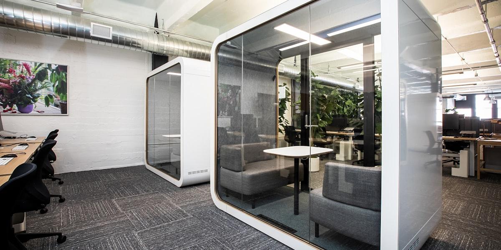

Канада является серьёзным игроком в мировом технологическом и инновационном пространстве, и её технологический сектор быстро растёт.

Канада является серьёзным игроком в мировом технологическом и инновационном пространстве, и её технологический сектор быстро растёт. Если вы работаете в технологической индустрии — или надеетесь в неё войти — Канада отличное место для этого. Страна активно инвестирует в исследования, искусственный интеллект, чистую энергетику и предпринимательство, а крупные мировые компании выбирают Канаду для расширения или создания своих операций.
Технологический центр между Торонто и Ватерлоо, Онтарио — иногда называемый «коридором Торонто — Ватерлоо» или «канадской Кремниевой долиной» — является одним из самых быстрорастущих технологических кластеров в Северной Америке. Здесь расположены тысячи стартапов, масштабируемых компаний и крупных технологических предприятий, а также университеты мирового класса, такие как Университет Ватерлоо и Университет Торонто, которые выпускают лучших специалистов в области инженерии и информатики.
Канада является мировым лидером в исследованиях искусственного интеллекта (ИИ). «Канадское преимущество в ИИ» основано на ведущих исследовательских институтах, таких как Vector Institute в Торонто, Mila (Квебекский институт искусственного интеллекта) в Монреале и Alberta Machine Intelligence Institute (Amii) в Эдмонтоне. Эти институты привлекают исследователей со всего мира и помогли зарождению некоторых фундаментальных идей современного ИИ. Джеффри Хинтон, которого часто называют «крёстным отцом глубокого обучения», провёл большую часть своих наиболее важных работ в Университете Торонто.
Помимо ИИ, в Канаде существуют сильные инновационные экосистемы в области чистых технологий (чистая энергия, электромобили, экологические технологии), медицинских технологий (цифровое здравоохранение, геномика), финансовых технологий (финтех) и технологий игр и развлечений. Монреаль является мировым центром разработки видеоигр, где расположены крупные студии Ubisoft, EA и других компаний. Ванкувер — крупный центр визуальных эффектов, анимации и игровой индустрии.
Канадское правительство активно поддерживает инновации через такие программы, как налоговый стимул для научных исследований и экспериментальных разработок (SR&ED) — одна из самых щедрых программ налоговых льгот на НИОКР в мире — а также различные инкубаторы стартапов, акселераторы и инновационные фонды. Для иммигрантов-предпринимателей и специалистов в области технологий программа Global Talent Stream Канады также предоставляет ускоренное разрешение на работу для высококвалифицированных технологических работников.
Обсудите вашу ситуацию с тем, кто видел случаи, похожие на ваш.